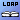

|
|
URLs |


A URL string is used in configuration in either of two ways. One way is as a referral. A referral is basically configuration data on an LDAP server. See the Referrals  lesson for details. The other way is to configure the initial context implementation. This use is described in this section.The JNDI defines an environment property Context.PROVIDER_URL
for configuring the initial context implementation. Here's an example that configures the initial context implemented by a file system service provider, com.sun.jndi.fscontext.FSContextFactory.
The URL string in this case is a file URL that specifies the file directory root for the implementation.// Initialize environment with various properties Hashtable env = new Hashtable(); env.put(Context.INITIAL_CONTEXT_FACTORY, "com.sun.jndi.fscontext.FSContextFactory"); env.put(Context.PROVIDER_URL, "file:/"); // Call constructor Context ctx = new InitialContext(env);Here is an example that configures the initial context of Sun's LDAP service provider.
In this example, the URL string supplied is an ldap URL. It specifies the LDAP server's machine and port number and the distinguished name of the root naming context ("o=jnditutorial").// Initialize environment with various properties Hashtable env = new Hashtable(); env.put(Context.INITIAL_CONTEXT_FACTORY, "com.sun.jndi.ldap.LdapCtxFactory"); env.put(Context.PROVIDER_URL, "ldap://localhost:389/o=jnditutorial"); // Call the constructor Context ctx = new InitialContext(env);From these two examples, you can see that the format of the provider URL string is service provider-specific. The provider determines the URL schemes that it supports. Also, most providers specify a default value for the Context.PROVIDER_URL property. For example, Sun's file system service provider specifies that if the Context.PROVIDER_URL property has not been specified, then the default provider URL names the root of the file system.
URLs: End of Lesson

What's next? Now you can:
- Continue on in this trail to learn about federation.
- Go to the Miscellaneous
lesson to read up on miscellaneous topics such as class loading and link references.
|
|
URLs |